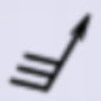
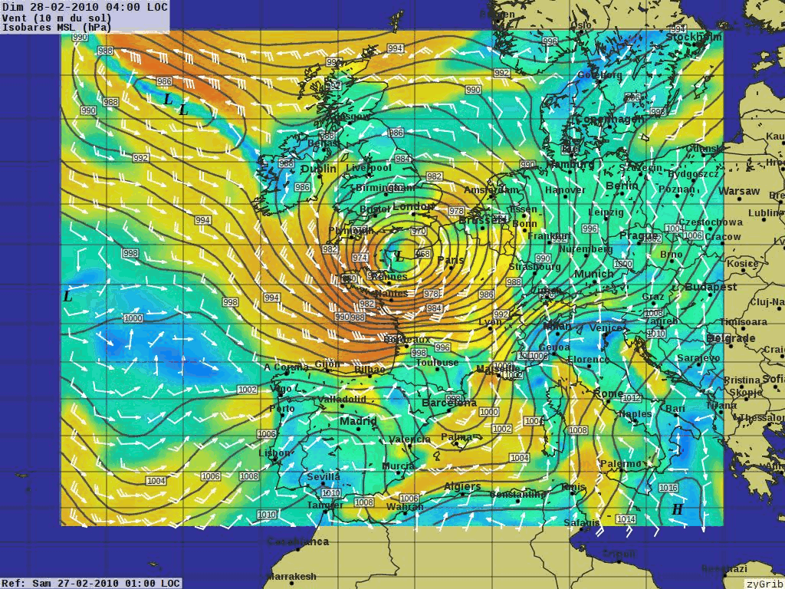

XyGrib¶
気象予想¶
XyGrib は Grib ファイルリーダ、気象データを可視化して、天気予報もしくは過去の再予報を分析するオフライン機能を提供しています。XyGrib は zyGrip ソフトウェアパッケージの新しいボランティアチームによる後継となります。気象を調べることに真剣な興味がある誰もに、有能な気象ワークステーションとして利用されることを意図されています。これには、セーリングコミュニティのメンバーや、民間およびスポーツの飛行士、農業従事者、気象マニアなどが含まれています。


主な機能¶
GRIB フォーマットのファイルからの気象データの可視化
気象・波浪予報の自動ダウンロード
IAC (fleetcode) データからの自動ダウンロード
8日間の予測アニメーションの再生
独自の地域天気図(世界中)を作成するか、特定の場所の詳細な数量予測を表示します。
風、気圧、温度、湿度、雨、雪、雲量、露点、波の高さ、および高さのデータをプロットします。
詳細¶
Webサイト: https://opengribs.org/en
ライセンス: GNU General Public License (GPL) version 3
ソフトウェアバージョン: 1.2.6
対応プラットフォーム: GNU/Linux, Mac OSX, MS Windows